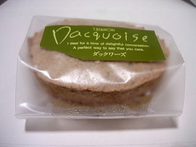
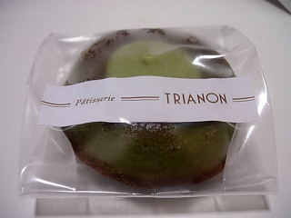
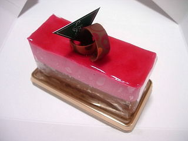
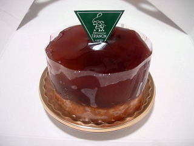
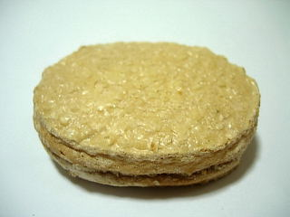

トリアノンのダックワーズ
2008/9/22
ちょっと緑色したダックワーズ（ピスターチ）です。

緑色してるだけあって、青い野菜の味がほんのりとしました。青系の野菜って好き嫌いがあると思うんですが、豆味でそんなにキツイ味じゃないので、食べやすかったです。
こっちは抹茶のケーキです。チョコが乗ってて濃い味ですが、なかなか美味しかったです。不昧って名前だったかな？

松江市北田町41番地
りびえーる 2012.11.11
によると、
月曜がお休み
9：00-19：00時営業
2008/9/22
ちょっと緑色したダックワーズ（ピスターチ）です。

緑色してるだけあって、青い野菜の味がほんのりとしました。青系の野菜って好き嫌いがあると思うんですが、豆味でそんなにキツイ味じゃないので、食べやすかったです。
こっちは抹茶のケーキです。チョコが乗ってて濃い味ですが、なかなか美味しかったです。不昧って名前だったかな？

2008/9/21
派手な色合いのケーキですね。「ルージュ」って名前でした。

見た目通り味も派手で、パンチがありました。3層になっているんですが、それぞれの味がしっかりあり、どこの部分をどう食べるかで、色んな味を楽しめました。
こっちはタルトタタンです。

リンゴの部分がとっても濃かったです。甘さも強かったので、最近流行のコンフィチュールっぽかったです。しかも量が多いので、スイーツを満喫出来ました。
2008/3/23
一畑百貨店の出雲店に行ったら販売してまいた。

ダックワーズって、パフパフっと乾燥した焼き菓子のイメージがあったんですが、これはちょっとしっとりとしてました。こうゆうタイプのものもあるんですね。乾燥したのってちょっと食べにくいなと思っていたんですが、これは食べやすくて良かったです。
アーモンドの味が濃く、甘さもしっかりとあって、満足満足でした。